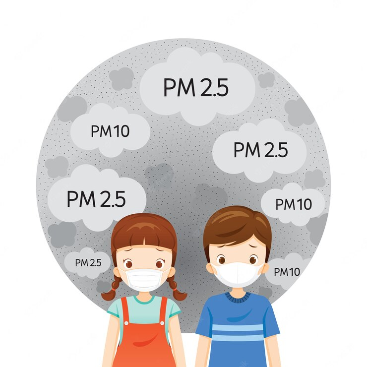
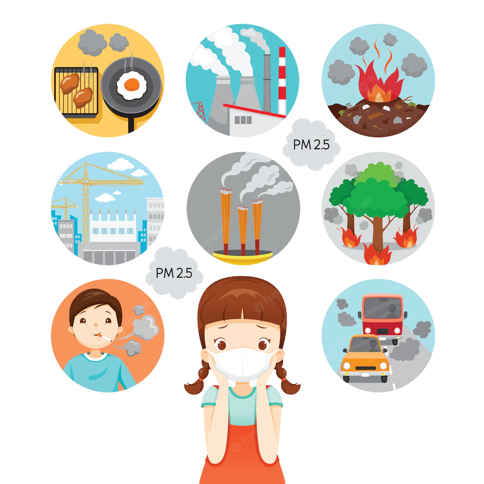

Polveri sottili
Le polveri sottili sono gli inquinanti più frequenti nelle aree urbane, l'origine di tali sostanze può essere naturale o associata all'attività umana. Esse sono dannose per la salute infatti sono definite come la forma più pericolosa di inquinamento atmosferico, a causa della loro capacità di penetrare nei polmoni e nel sangue, causando quindi attacchi cardiaci, malattie respiratorie, e morte prematura. In particolare, risultano essere la sesta causa di morte prematura nel mondo.
Le polveri sottili sono classificate in base alla loro dimensione:
PM10
Sono le polveri sottili con diametro inferiore a 10 µm Scopri di più
Le PM10 possono essere inalate e penetrare nel tratto superiore dell'apparato respiratorio, dal naso alla laringe. Studi epidemiologici, confermati anche da analisi cliniche e tossicologiche, hanno dimostrato come l'inquinamento atmosferico abbia un impatto sanitario notevole; quanto più è alta la concentrazione di polveri fini nell'aria, infatti, tanto maggiore è l'effetto sulla salute della popolazione. Gli effetti di tipo acuto, sono legati ad una esposizione di breve durata (uno o due giorni) a elevate concentrazioni di polveri contenenti metalli. Questa condizione può provocare infiammazione delle vie respiratorie, come crisi di asma, o inficiare il funzionamento del sistema cardiocircolatorio. Gli effetti di tipo cronico dipendono, invece, da una esposizione prolungata ad alte concentrazioni di polveri e possono determinare sintomi respiratori come tosse e catarro, diminuzione della capacità polmonare e bronchite cronica. Per soggetti sensibili, cioè persone già affette da patologie polmonari e cardiache o asmatiche, è ragionevole temere un peggioramento delle malattie e uno scatenamento dei sintomi tipici del disturbo.
PM2.5
Sono polveri sottili con diametro minore a 2,5 µm Scopri di più
Le PM2,5 possono essere respirate e spingersi nella parte più profonda dell'apparato, fino a raggiungere i bronchi. Le polveri ultrafini potrebbero essere addirittura in grado di filtrare fino agli alveoli e ancora più in profondità nell'organismo e, si sospetta, entrare nel circolo sanguigno e poi nelle cellule. Studi epidemiologici, confermati anche da analisi cliniche e tossicologiche, hanno dimostrato come l'inquinamento atmosferico abbia un impatto sanitario notevole; quanto più è alta la concentrazione di polveri fini nell'aria, infatti, tanto maggiore è l'effetto sulla salute della popolazione. Gli effetti di tipo acuto, sono legati ad una esposizione di breve durata (uno o due giorni) a elevate concentrazioni di polveri contenenti metalli. Questa condizione può provocare infiammazione delle vie respiratorie, come crisi di asma, o inficiare il funzionamento del sistema cardiocircolatorio. Gli effetti di tipo cronico dipendono, invece, da una esposizione prolungata ad alte concentrazioni di polveri e possono determinare sintomi respiratori come tosse e catarro, diminuzione della capacità polmonare e bronchite cronica. Per soggetti sensibili, cioè persone già affette da patologie polmonari e cardiache o asmatiche, è ragionevole temere un peggioramento delle malattie e uno scatenamento dei sintomi tipici del disturbo.
Polveri sottili
Le polveri sottili sono gli inquinanti più frequenti nelle aree urbane, l'origine di tali sostanze può essere naturale o associata all'attività umana. Esse sono dannose per la salute infatti sono definite come la forma più pericolosa di inquinamento atmosferico, a causa della loro capacità di penetrare nei polmoni e nel sangue, causando quindi attacchi cardiaci, malattie respiratorie, e morte prematura. In particolare, risultano essere la sesta causa di morte prematura nel mondo.
 Limiti di riferimento
Limiti di riferimento
| Inquinantante | Periodo di mediazione | Limite |
|---|---|---|
| PM10(µg/m3) | Media giornaliera | 50 µg/m3 |
| Media anno civile | 40 µg/m3 | |
| PM2.5 (µg/m3) | Media anno civile | 25 µg/m3 |
Ecco alcuni grafici riguardati le polveri sottili:
Le nostre centraline
Le nostre centraline si trovano principalmente in Europa e Africa, e rivelano in tempo reale i vari dati di:
- Monossido di carbonio (CO)
- L'umidità relativa (RH)
- Temperatura(T)
- PM10 (polveri con Ø - 10 µm)
- PM2,5 (polveri con Ø - 2,5 µm)
Per ulteriori informazioni riguardo le nostre centraline clicca qui
Ecco il luogo in cui si trova la centralina dalla quale abbiamo rilevato i dati riguardanti il PM10 e il PM2.5: